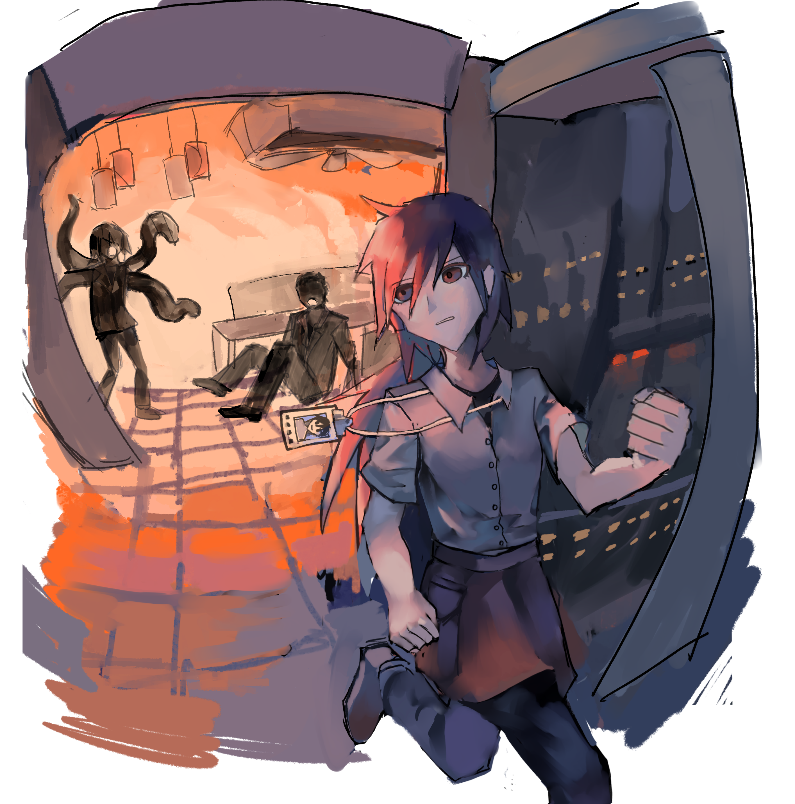

我做了一个逃离的梦。
序
回忆录是什么样的呢？之前好像是在书店里看过一些。
——经历过某场盛大与荒芜的人们，用自己的言语，从不同旁观者的视角，反刍着那段时光中所发生的一切。因为，在那个地方，想让很多年以后的大家仍然不要忘记的事情。那一定是很重要很重要、无论如何都无法从这个宇宙中割舍掉的事情。
这是我所推测的那些作者们的心情、同样也是我自己的心情。我本不愿再回首触碰那一切，但是随着年岁渐长，我开始感觉一些不可或缺的东西正在从我身边逐渐远去，然后心中本已愈合的某处突然又开始疼痛起来。Azure的面孔在我的脑海深处越来越模糊，虽然它仍然时常出现在杂志和书籍的扉页上，但是无论如何那怎样都不再是活着的他了。
总之，我决意要写些什么。关于我和我曾经加入的那个乐队，“霓虹星球”。我不得不反思，在过往的快要接近六十年的人生中，我接触的书籍一直很少，文笔也超级烂，而且始终没有摆脱被辱骂成文盲的阴影。我试着用他那样诗一般的语言写作，但是无论怎样也做不到。而且，我超讨厌写任何煽情的部分，它们就像流行情歌一样絮絮叨叨、令人反感。几十年过去了，关于Azure和霓虹星球的书刊已经可以填满一面靠墙的书柜，但是关于“你自己怎么想？”的领域至今仍是一篇空白。霓虹星球的剩下三个成员，不约而同地对整段历史闭口不谈。
可是，可是……我终归还是有必须要表达出来的东西，如果不这么做的话指不定会抱憾终生。关于音乐，关于艺术，关于爱、死、梦……我知晓或许它根本不可能被任何人看见——至少在我还活着的时候，或者我的家人还活着的时候。如果没有婚姻和家庭的话，或许我还可以在遗嘱中交代这本书将在我死后出版——然而现在，这些破碎的言语却只能随着一代又一代的传承而在暗处腐烂了。但是没关系——这样的事情，只有我自己记得也好，永远锁在工作室的保险柜里也好。无论如何它得以用某种形式留存在世界上，这已经足够令我感到慰藉了。
距离那个疯狂而令人目眩的时代已经过去好多年了。我终于能鼓起勇气从麻木中抬起手来。尽管触摸记忆的每一刻都如同刀割，但是我只是害怕——害怕所有这些乱七八糟的记忆最后都逐渐褪色，最后和我的尸体一起消失在历史中了。
那么，如果做好准备的话……
欢迎来到三十年前的虹城。希望时代的虹城。
一
我的名字叫Rusty。
啊，不对。应该说，我第一次决定站上演出场、从此彻底扭转我的命运之前，在前台的登记处为自己写下的艺名，叫做”Rusty”。
在此之前，我是一个随处可见的普通人类。普通到即使哪天死掉，世界也不会发生一丝一毫的改变。当然，让我之后引以为傲的所谓天赋，也没有任何人发现。
我出生的那个地方也像我那样无趣，了几座有些年头的工厂以外，就都是些小小的民房。爬上放着水箱灰不溜秋的屋顶，就可以把火柴盒似的建筑群一览无遗。墙体像洗了好几遍的布一样斑驳得泛白，石板路和野草分隔出人与自然活动的痕迹。
大概从四五岁的时候开始，我总是做那样的梦。我好像在遥望很远很远的地方，我不知道那个地方在哪里，好像处于回忆中又好像位于未来。我梦见有人拉着我的手奔向天际线，梦见楼房的消失点指向湛蓝的天空。我的心开始瘙痒，好像某种无比强烈的情感快要涌出，但是这种感觉既无法言语又无法形容，我想要振臂呐喊，想要放声欢呼，想要在空中飞翔。可直到梦的尽头，我能做到的只是大大地张开嘴巴，四肢却僵硬无法动弹，喉咙也无法发出声音，最后只能在无尽的失落中醒来。
有时候，父亲会在饭桌上对我和我的四个弟弟妹妹们大放厥词。他总是那样指指点点、炫耀般地说，看，这些工厂生产的元器件，会被大卡车运走，然后被装上货船，随着河流一路向下，最后汇聚到虹城。虹城是什么地方？大城市、首都！寰宇国所有大公司的总部都在那里，全国最大的港口也在那里。发动机呀，电脑呀，寻呼机呀，都会从这个枢纽出发，运往全世界！光辉国、阿尔特兰德、多米西尼……你们没有见过货轮吧？长得就像个浮空大城堡似一样！哦对，还有国际机场。长着两个小小翅膀的东西满天飞、也不会撞到一起，真厉害！
这个时候我们就会找来早已翻得破旧不堪的识字书，认真记下上面的插图和特大号加粗的词语。轮船飞机大火车，港口摩天楼大都会。成群的建筑像山一样高，云朵掠过白得耀眼的楼体，天一黑下来，楼房隐没于黑暗之中，浮空的灯火汇就聚成光的海洋。想象着那样的风景的我们连声惊叹着，然而在一旁忙活的母亲却冷笑着说，这些有什么好羡慕的……?哪里都一个样！
可是啊，从城里回来的大人们还是会带来各种令小孩子心驰神往的东西；装在漂亮盒子里的零食、看不懂构造的古怪玩具。当然，最吸引我的当然是那些可以储存音乐的小小盒子（我后来才知道它叫做磁带），还有可以播放小盒子里歌曲的大箱子（收录机）。大人们像变魔术似的勾引小孩子，扣人心弦的乐音在机器里面忽闪忽闪，我就这样整天趴在邻居家的窗户口，仔细聆听着里头传出来的动静。然后，在某天的某时某刻，砰的一下，我突然被某种像魔法一样的东西击中了。
收录机里面突然传出来不是那种广播站里只有呆板的傻瓜鼓机和像僵尸一样哐哐砸的电钢琴。就是在那一刻，梦中的世界突然鲜活起来，张大的嘴巴终于发出声音，所有无法言说的情感在一瞬间突然拥有了轮廓。紧接着，全身的血液好像都开始奋力挣扎，像雨后发芽的种子那样，突然一齐朝着天空或者太阳涌去，变成翅膀那样的形状。我确信那一刻我千真万确是自由的、像奋力跃起后双脚离地的片刻，可是当那三四分钟过去，气球萎缩起来，天国变成地狱，翅膀又变成根，沉重的身躯又被拽向大地。我开始像中邪了一样蹲守在在邻居家的窗户旁边，虽然在大多数时候拼命竖起耳朵也只能听得到隐约的鼓点，但是这已经足够让我心醉神迷了。
”唉，城里人就是狡猾呀！“母亲说，”整天变出这些不重样的东西，好把大家都骗过去。”
可是邻居叔叔却告诉我，城里工作的人非常辛苦，加倍丰富的娱乐是为了犒劳他们而准备的。
记得有一天，我偷偷骑着家里的自行车载妹妹出去玩。我说我们要去找像山一样高的房子，可是一驶出镇子，真正的山便挡住了我们的去路，我咬咬牙便冲上了蜿蜒的山坡，另一侧的世界终于在树荫中显露出来。但是，眼前的景象仍然是山、绵延不绝的山，几十座层层叠叠的和我脚下一摸一样的山。天色逐渐暗下来，山的背阴面黑得恐怖，连向来轻柔的风也带上异样的颜色。悲戚的啸叫声一响起来，树木巨大的投影变得如同怪物，妹妹在后座上害怕地哭起来。我筋疲力尽地蹬着踏板回家，每一寸肌肉都开始疼痛，到了家又免不了挨了顿打。
初中毕业之后我便没有再上学，因为按照父母的话来说，我这种人多白吃家里的饭一刻都是在浪费钱。不过，只要去拿着礼物拜托镇上那些穿黑色衣服的大人，他们就能马上把你塞进镇上任何空缺的位置。我在一条流水线上我待了大概三年的时间，每天的工作是将步话机包装进纸壳子里。工厂里有很多和我年龄差不多的人，大家经常讨论下工后要去干什么——去对面的超市里买冰棒，或者去附近的空地上打棍球。至于关于“未来“的种种，大家几乎都闭口不谈。在还未来得及展开就肉眼可见地开始腐烂的人生面前, 仅仅是去想明天会怎样这件事情都是很可怕的。相比之下只有娱乐能带给我们相对无痛的时光，我们将这些完全丧失思考的时间称作幸福。
但是在我18岁的那年，世界发生了一些变化。
牢不可破的山脉突然被盾构机撞破，铁道径直铺设而来。起初，镇上有许多人气冲冲地举着牌子抗争，说贪得无厌的人类竟破坏了山神的身躯；可是随即，他们发现铁路运输带来了史无前例的便利和财富，便又不吭声起来。巨蛇般的铁轨在告示牌上又变回一条细细的线，镌刻在边上的文字告诉我们，这个小小的车站从此以后将通过这跟脉管和世界相连。无数根这样的脉管汇聚成巨大的网，在两条河流的交汇处聚集为一点，这就是枢纽计划，路网们共同的交点叫虹城。巨大的列车呜呜叫着，从无穷远处驶来又奔向无穷远，一车车的希望和梦想被送向远方。面对街坊邻居口中关于都市的诱惑，父亲也再也沉不住气来，因为他听说只要在虹城随便一个餐馆里端一个月盘子，都能拿到六千块工资。
“最年长的孩子应该多些责任感！”在他的命令下，我便稀里糊涂踏上了去虹城的路。拥挤的车厢里挤满了未曾谋面的人，我听他们兴奋地说着关于虹城的种种，比如它得名于常年多雾多雨中常常出现的彩虹，比如那里曾经是神仙和妖怪的居所，又因为天气阴森可怖而别号“鬼城”，奈何其地理位置实在优越，最后还是成为了古代商人们最心仪的商贸中心。
下午接近黄昏的时候，原本令人昏昏欲睡的车厢逐渐骚动起来，突兀响起的广播声被欢呼淹没，人群的脑袋向窗户涌去。
“寰宇塔！”“寰宇大剧院！”我听见他们此起彼伏的叫声，但却只来得及看到一大片黑影逐渐逼近，暮色下一座座规整的柱状物笔直地插入浓重的雾中，形成了我从未在地表上见过的奇异地貌，然后列车便一头扎入了黑暗之中。
列车停靠在中央车站，这是我第一次用肉眼衡量“巨型”的概念。构成这些建筑的物质还是和故乡一样的，碳硅铝铁铜，梁柱门墙窗，但是比起故乡的小房子，它们每一个都好像被夸张地放大了数倍。哪怕是竭尽想象力描绘外星历险记的漫画家，大概在见过实景前也绘制不出这样的场面吧。游客像装罐头似的被塞进铁皮大巴，钻进对岸巨大的阴影当中。灰色的墙壁往上延伸到超出视距以外的位置，构成了目光所能及的全部天空。庞大的体积让它们在住客面前变得不可撼动起来，仿佛是从人类文明起始之时就已经存在着那样理所当然，一如故乡的群山。桥的对面站着被不同的标志物装点着的人，手里拿着花花绿绿的传单。“来吧！来我们这里工作吧！”他们用那种盛情难却的声音对着我们大声吆喝，好像这座贪婪的城市永远没有被填满的那天。高楼和浓雾几乎遮挡住了自然光，整座城市的能见度低得吓人，弥补这一切的是群星般的灯火。
……那时我刚好赶上虹城“大基建”，这是一次给这个野心勃勃的枢纽城腾出足够大容量的大工程。整个城市成为了一个巨大的建筑工地，原来的老工业区全部被搬走，缺乏组织的老街区也全部被大刀阔斧地捋平。除了地势比较平坦的中滩区，其余从西到东四个区都要被巨型地建筑楼所覆盖。西一区的主城区和西二区的交通枢纽率先建好，东一区还在乒呤乓啷地重修之中，而东二区尚且还是一片废墟。平均高度达到三百米的的骨架在打好格子的地块上拔地而起，钢铁制成的筋和混凝土制成的血肉构成城市的身躯，不同功能的房间像四肢一样延伸出来，构成了巨人国一般的生态群系。小时候我听村里的人说，生活在森林里的人类会把房屋修建在树上。相传在寰宇国往南还要再往南的地方是神奇的黑森林，十几人才能合抱的树干在百米高空铺展开茂密的穹顶，原始部落的房子就攀附在树的身躯上。而虹城就像那样再放大几倍的黑森林，盘踞在峡谷上空的雾气像黑森林的树冠。或许，人类总是在无意识地模仿自身演化的历史吧。
我在虹城的第一份工作是在一座酒楼里当服务员，是父亲的朋友帮忙介绍而进入的所谓“端盘子”工作。他们说，只要肯踏踏实实干活，不出两年，服务员就可以变成高级服务员。高级服务员变成服务员组长，最后晋升为高层管理员。可是老人端盘子的速度真的比年轻人快吗？我不知道。
我的组长是一个鼻子很大的女人，可能是因为一生气就会不断吭呲吭呲从鼻孔里喷气。她无论走在哪里都要直挺挺地穿着一身正装，但是不知为何反而显得更加搞笑。她用洪亮的叫声指使麾下的员工，像军官那样做着夸张的指挥动作，粗短的手指在空中笨拙地飞舞，我有时觉得她可能更适合去唱歌剧。此外她自作主张地制作了一张规模庞大的表格，只要我们违反了其中任何一条，她就可以趁机克扣一部分工资。我和其他员工挤在小小的宿舍里面，采用的是轮班制，运用十二小时的时间差分割出活动的空间。
休息的时候我就漫无目的地游荡在虹城的街区。模糊又潮湿，黑暗又繁华，无论种族和出身，五花八门的娱乐设施随时向任何人敞开。距离地面的几层楼被称呼为下城区，是最喧闹的场所：酒吧，街机厅，购物街，夜店，竭尽全力在大楼的躯干开凿出让自己显得气派的洞口。在当时这些店铺还没有经过统一的规划，只是像不同的积木块一样穿插进骨架中。霓虹灯取代了日光，天花板贴纸取代了蓝天，吵闹尖啸着的人群像垃圾水发酵泛起的泡沫，流连在现实时钟失效的的人造景象中。如果担心一恍惚就赶不上重要的日程也无妨，这里蹲伏着可以随时提供援助各种叫醒和接送服务。从下城区往上10层楼左右，外墙的装潢就逐渐变得整齐肃穆，那里是灰墙包裹下的中城区。黑黢黢的窗户像空洞的眼窝，只是冰冷地俯瞰脚下的虹彩。中城区的最底层是受到噪音干扰最严重的廉价宿舍，然后是家庭住宅楼和中小学，再往上一些的地方是正规餐厅和企业办公室，在这之后，七八十层楼以上，就被重重迷雾所隔绝开了。在那之上住的都是什么样的人呢？那个地方距离我们实在是太遥远，既无力关心又惮于想象。虽然建筑的内部有电梯，但是目的地的按钮只排列到二三十层楼就戛然而止了。
或许得益于虹城独特的纵向结构，虹城的居民把晋升形容为“向上爬”。与此相对地，将在街上寻欢作乐称作“堕落”。尽管如此，他们仍然将下班后难得的放松时间全部都消磨在下城区中。“人嘛，总要堕落一下的嘛。”他们这样辩解地说，但仍然用鄙夷的眼光看待在这里工作的人。
那是一个一如既往的晚上，我在酒楼里工作，一个大概是喝多了的粗壮的男人正在饭桌前手舞足蹈。他的动作像是某种笨重的动物，我经过他身边的时候，他猛地一转身，我手上的菜盘就这样飞了出去。酱料随着清脆的陶瓷声播撒在地面上，升腾出一片诱人的香气。这是本店引以为傲的招牌菜，虽然菜单上只标注“特色野味”，但是它真正的身份顾客都彼此心照不宣。各色各样的香料组合巧妙地去除了古怪的腥臭，做法显然不够精致，但是足够满足顾客的猎奇心。寰宇国大部分城市明明连着山脉，却鲜有大型野生动物，难道是这种原因吗？
我跌坐在地上，知道有人马上要来处置我——或许是店长，或许是组长。我捡起餐盘里剩下的食物。精心制作的酱料非常美味，但是肉本身的口感却柴得像路边的树皮。
“这人怎么走路不看路啊！直接撞我身上，你看看……”粗壮男终于在我头顶发话了，然后我的后方响起了那个熟悉的洪亮叫声，似乎在嚷嚷着些什么，但是听不清。我没抬头。我知道她是谁。
“道歉。”
“是他撞的我。”
“不道歉的话，这个月的工资全部没收。”
“我才不要。”
“还敢顶嘴？500元先扣了哈~”
“去你的吧！”
我突然大喊着一跃而起，一拳撞在她巨大的鼻孔上。第二拳击中了肥壮男的下颌骨。我看着肥壮男仰面朝天跌进了沙发中，而组长捂着鼻子摔倒在地上，口袋里的钞票散落一地。于是我以迅雷不及掩耳之势，随手抓起一笔工资，连员工宿舍里面的个人物品都来不及拿，就头也不回地逃走了。
从正对着街区的大门窜出后，我纵身跃入人潮之中。我没有看到追上来的人，但是一刻也不敢松懈。我瞄准着每一个可以互动的物体，路口、阶梯、暗巷、穿梭巴士，从西一区一路逃蹿东二区，直到眼前的景象从混凝土森林那个变为废墟——那是各种各样的建筑垃圾被随意地倾倒在河岸上。确认没有人追上后，我才松了一口气，瘫倒在岸边。如此壮举在今天的虹城无论大概是不太可能实现的了。
等心跳声安静下来，我这才发现周身世界安静的吓人，惨白的月光糊在岸边稀薄的雾上，唯有远处的工程车发出引擎的鸣响。接下来怎么办才好呢，我突然意识到这个世界上从来没有任何一个真正属于我自己的地方。即使在故乡的家里，也没有任何一个房间写着我的名字。除了手上攥着的一笔钞票，我没有任何可以维持生存的手段。所幸的是我将大部分的工资都寄回了家里，赚取的总额并没有亏损太多。
之后的那段时间里，我趴在柜台上到处打听租金最便宜的住处，偶尔盘算着找到一个可以隔离敌袭的掩体就又可以省下一晚的住宿费。我随身携带的物品是一根钢管，是在河滩的垃圾堆上面捡到的，凭借以前打棍球的经验，勉强可以作为防卫的武器。枢纽计划的作用有目共睹，无数竞选者络绎不绝地从全国各处涌来，比拼着谁能把自己的姿态放得更低，任由泛着油光的鞋子将他们踢来踢去。“绝对自由”，我不是如愿以偿的得到了吗，我这样想着。白天的时候尚且可以乐观地自嘲，但是一到晚上又开始全身发冷，害怕地躲在公共厕所里面哭。这也是没办法的事，那也是没办法的事。妥协、不断地妥协，仅仅只是躺在床上也会感到饿，仅仅是呼吸也会消耗资源，我没有要求过任何条件就降生到世上，却好像成为了一个负数的生物，每天要还债般维持着活着的状态，人们把这样的命运称为罪业。
后来我找到一个可以勉强稳定停留的住所，这是某天我在半夜的河滩上溜达的时候，从一个古怪的人口中打听到的。他长着一头突兀的白色头发，说他的名字叫“Monster”，却兴奋地告诉我他知道一个任何人都不会被当成怪物的地方。他带着我挤进集装箱和木棚的缝隙，像动物在寻找树篱里钻出的洞，终于来到一个破破烂烂的不知道是旅舍还是酒吧的建筑前，门口的标牌用儿童画一样的字迹歪歪扭扭写着“梦之家”。
这里的人们坚持着创始人最初所谓雇佣和赎买关系都不存在的理念，几乎不向住客收取任何费用。虽然里面确实乱糟糟，每天都有各种不知道从哪里冒出来的怪人跑来跑去，不过好像大家又能自发地形成一种奇异的秩序。破烂地墙面上一层盖一层贴着各种各样的海报和宣传单，被撕开的部分露出了墙上原来的涂鸦，大部分是花草小动物之类莫名奇妙的东西。自然，这个地方在如今的虹城已经不复存在了，因为它的遗址是东二区二街2.5号。但如果有心人来到这个地方，可能会不时看见两座楼的夹缝间突兀出现的白色花束。“梦之家”的老板——不，应该说是管理人常常向我抱怨这名字真是蠢得可以，如果是她的话应该会取带有“边缘”、“夹缝”之类词缀的名字吧。
总之如果不能假装自己死了的话就必须像电影里的特工一样伪装出体面的生活，无论无何不能让家里人知道我失去工作的事情。如果事情暴露的话会怎样呢？也许父亲的朋友会抓到我，然后我会永远失去这个五彩斑斓的世界，我想起故乡的牲畜们一辈子被锁在只占地表面积亿分之一的空间里。我想到邻居家的小黑狗两年生了八个崽。于是在接下来的两年里，我试图从各种地方换取各种地方争取足以伪装出我还在酒楼打工的工资。这是我后来成为应援鼓手的契机。
说起来有些好笑，我对于打鼓这件事情的经验其实起源于太想听音乐而想出的怪主意。在当时想要随时随地同音乐可不是那么简单的事，不仅可以播放音乐的机器都卖得很贵，而且每购置一张专辑都要额外消耗一笔巨款。好在这些当下热门的音乐被各种五花八门的赌场和游戏厅视为一种商机，运用到他们花里胡哨的装修艺术中，他们似乎认为劲爆的音乐和高频闪烁的五彩灯珠能构成一种催眠般的效果，让流连其中的游客纷纷丧失理智。我所关注的是一款叫“爆裂鼓手”的街机，这是一种通过鼓棒根据节奏敲击机器，获取得分的游戏。游玩的时候，就像播放机一样，可以随意选择自己喜欢的歌曲。
虽然设备相比真正的鼓组经过一些简化，只有底鼓军鼓踩镲三个传感位，但是的音色也足够玩家自己脑补了。游戏厅固然吵闹，不过倒也适配音乐的氛围感，我也就无所谓啦。如果前一个玩家没把次数都用玩就跑掉了，我还可以额外再蹭上几次。
店老板似乎不太欢迎我来，照他的话说，有我在机器的损耗得加快一倍。再加上还有别的玩家要排队，我也不能占用太久。这就是公共游戏机的麻烦之处，不像后来的游戏主机和外设手柄一样自己购买。我逐渐摸索到自己的一套记谱法，只要标记好节奏型切换的时间点，即使不用看屏幕上的指示也可以顺利完成全连击，我用油漆桶制作了一个简易鼓，空闲的时候就自己私下慢慢练习，为自己的一点小巧思感到沾沾自喜。
“恭喜！”
也不知道是哪天，这个大大的黑底红字就突然跳出来，下面跟着一行字：“请输入你的名字。”这意味着我终于挤进了历史最高分的排行榜，不再是藉藉无名的人了。我的内心本该狂喜，但是大脑却突然一片空白。无论是家里的动物还是我自己，我从来不曾拥有过给任何一个事物赋予名字的权力。直到最后我也没能想出一个响亮的名字，只是在“爆裂鼓手”的默认名后面加了一个“111”。不过一曲结束后，如果围观的人啧啧称奇，就要装作若无其事的样子，一边拍拍衣服一边说“也就那样吧！”，这样就显得的自己更加厉害了。久而久之，我似乎自然而然地就觉得自己可以胜任真正的鼓手。哦，倒不如说，为了上难度而刻意复杂化的打法已经比大多数真正的鼓谱困难了。
大概是因为大块头乐器又贵又难搬运，所以livehouse一般都会准备公用的鼓。对于大部分初创的乐队而言，稳定合作的鼓手并不是十分迫切的选项，因此常常会发出公告招募应援鼓手。对我来说绝大部分经典曲目的鼓谱都能倒背入流，这给了我可乘之机。于是我白天在街上卖冰镇饮料，晚上出席几次演出，加起来一个月的时间大概能赚七千元。扣除邮寄回家里的四千元和生活费，每个月还能存下一点积蓄。这样的生活持续下去，指不定有朝一日我就能买得起自己的鼓了；我暂时沉醉在这样的理想之中，生活也算是有了一个大概的方向。
虽然东二区一带的管理相当混乱，不过大部分的人倒没有什么恶意，也许因为在当时的虹城想要满足最基本的生活需求也不算太难。只是出门在外，总不免遇到一部分喜欢起哄的家伙拦住去路。
“流浪汉！哦不对，应该是“流浪女“。等等，为什么没有女的流浪汉呢？”
然后他们就开始狂笑起来。“你一晚上多少钱啊？“
我也懒得和他们多说，抄起手上的棍子就开始向人群冲去。气势总是有用的，人群开始作鸟兽散，并且对我的称呼从“流浪汉”变成了“野人”。
为了能彻底地摆脱这群捣乱的家伙，我想到的办法是把自己的外貌变成恐怖的模样。我向理发师比划着，把头发染成最刺目的那种红色，再让它们凌乱地散开，像民间传说中在山上抓动物吃的妖怪。我当然不觉得这有多好看，只要足够吓人就行。不过时间一长，红色的头发倒也成为了一种独属于我的标志，明显到很多人在百米开外就能在人群中认出我来。
自己的形象越来越鲜明的同时，我起初一片空白的脑袋瓜里好像也有着什么东西在慢慢成型。大红还有钢灰的颜色，锐利又坚硬的触感，还有，些许的攻击性——这个东西在我的脑海里呼之欲出。然后我才意识到，这是一种为某物命名的冲动，那团拥有了颜色和触感的东西，逐渐地浮出了水面。
最后，它凝聚成了我在最后在应援乐手的登记上写下的名字，“Rusty”。
就这样，这种似乎有什么规划但是又浑浑噩噩的生活一直持续到我20岁那年。如果真的像前辈们所说从端盘子开始打怪升级的话，大概这个又臭又长的流水账还要再续上十倍不止吧。但是从那一天开始，一切都不一样了。
那个彻底扭转了我的命运的人，她的名字叫Flint。
二
我记得那是一个星期五的晚上。我照例在街机厅玩耍。初冬的气温并不太友好，虽然熙熙攘攘的人群可以不断产生热量，但是四肢还是会变得不太灵活。但是我记得那一天自己心情特别好，连续刷新好好几首新曲的记录。渐渐地，周围聚集了好几圈看热闹的人。作为远近闻名的“机器毁灭者”，店主自然是想快点打发走我的，但是看大家都很起劲，也只好默不作声，就当我是带来额外的客流。
“Rusty？她就在那里，你要找她吗?”
猝不及防地，我的名字突然从远方传入耳边，我吓得浑身一抖，差点乱了节拍。本能在第一时间传达的讯息是，有人要抓我。可是不对啊，我之前打人的事情不是已经过去快一年了吗？是我欠了谁的钱吗？还是寄存的东西被偷了？
一曲结束之后，我用余光瞟向门口的位置，只见和店主在说话的是一个长得像海报上面那些女明星的家伙。她穿着服装店假人身上的那种套装，闪闪发亮的皮面上挂着很多金属装饰，虽然构成了很随性的造型，但却是真正的街头艺人绝对买不起的。总之，如果在漫画里出场的话，这身装束绝对不属于路人。正在这时她与我四目相对，于是便挥了挥手，一甩淡灰色的秀发向我走来，高筒靴跟与地面发出清脆的声音。
我的内心愈发不安起来；这个人恐怕不是长得像女明星，可能她就是女明星！我被自己的念头吓了一跳，本能般地向后退，但是对方迈着大跨步，咄咄逼人似的靠近过来。
“你就是Rusty小姐吧？”
“你要干….对没错，找我有什么事吗？”
对方似乎努力想展现自己的友善，露出了灿烂笑容。她兴奋地打量着我的历史记录，对我的技术赞不绝口，这使我松了一口气，至少对方关注点在鼓上，没有涉及到其他麻烦的东西。
“你在这一带可出名了！你知道吗？”
“哦，哦……!是这样吗？”我迟疑的应答着，她逐渐带我离开游戏机和人群，不断地抛出一些话题，比如我的鼓手生涯啦，我的来历和去处啦。我有一搭没一搭的应和着，虽然内心稍有防备，但是谈及自己的流浪生活的时候又不免兴奋起来。我说我的经历说不定能写一篇奇异的游记，如果不是自己文笔太差，肯定会大受欢迎。
“Rusty，今天真是麻烦您了，我请你喝点东西吧！”Flint这么说着，带我去了她最喜欢的一家酒吧。和我常逛的被叫做酒吧店铺不同，那里没有烟味也没有乱七八糟的贴画，墙壁被金粉色的帘幕装饰着。天花板攀爬着藤蔓和树枝状的吊灯，角落里还有巨大的的长着角和蹄子的动物模型。在暖色的灯光和自由的切分拍中，我也不禁全身心放松下来，被菜单上琳琅满目的饮品看花了眼。
我指着菜单上一个紫红色和青色渐变的饮料说就要这个吧，我看不懂说明中形容的到底是什么味道，只是觉得它的颜色十分美丽。服务员很快将实物端了上来，宝石般的液体里冒着小小的气泡，尝起来凉凉的甜甜的，还带着水果的香气。新鲜的浆果在多阴雨的寰宇国可不多见，我仔细品尝着宝贵的液体，然而却逐渐开始越喝越快，最后没忍住一饮而尽。
“欸！慢着点呀！这一款度数好像很高的……”对面的Flint惊慌失措起来，想要阻止我，但已经来不及了。
咦，原来这是酒吗。怎么感觉和我以前喝过的不一样？
再接着，我突然眼前一黑，世界就这样在我面前消失了。
头好痛。
我在一个完全陌生的世界中醒来。
我记得当时的季节确实是冬天没错，但是虹城的雪景并不好看。洁白的雪花通常没落到地面就被灯珠和人潮散发的热气融化了，雪水和湿黏的灰尘混合在一起，变成一团灰扑扑的丑东西。但是眼前的场景却洁净到可爱，墙壁和天花板都粉刷成雪原一样白。我像是一个露宿的猎人翻开积雪在森林中醒来，空气中充满异常清新的味道。随着我的视野逐渐变得清晰，我慢慢辨认出周身的物体。长得像封冻河面的波纹装物体原来是大理石瓷砖，长得像冷褐色土地的是实木地板，身下柔软的苔藓原来是沙发上的毯子，毛茸茸的触感蹭得我的脸好痒。
我从沙发上支起身来。然后，在不远处的巨大窗户后面，我看见了从未在虹城见过的东西：蓝天。
我这是在哪？？
我彻底惊醒过来，虽然还是觉得有些恶心想吐，但是身体已经先行一步不安起来。我缓缓走向到窗户前，日光的强度让长久暴露在霓虹灯下的双眼很不适应。隐隐约约地，我看见了一些有小小尖顶的漂亮建筑，看上去像是一些一两层的小平房，错落有致地分布在开满鲜花的草地上。碎石小径延伸出去消失在云和雾之间，在更远处的陆地上又浮现出来。我有些恍惚，想起了小时候梦中的那个地方。再然后，我的余光扫到了外墙上的门牌号，上面写着虹城西一区一街101层九座。
我呆滞在原地，过了很长一段时间才反应过来——对，我确确实实还在虹城，只是绝非我认识中的那个地方。云雾遮住了万丈深渊，草坪和鲜花种植在离地三四百米高的平台上。西一区一街，我在不久前刚去过，挤满了嘈杂的游戏厅和商城，但是此刻那些乱七八糟的炫光和大喇叭全都消失不见，因为我和它现在并不处于同一个空间。
这里是上城区。
鸟鸣般婉转的声音传入我的耳边，不过我很快意识到这并非鸟鸣，而是由台式键琴发出的声音。Flint淡灰色的脑袋从房间门口探了出来。
“咦？！我吵醒你了吗？”
我说没有，但是又一阵晕眩袭来，不由得抱住脑袋。
Flint连声道歉，带着我去厨房拿可以醒酒的汤。她说昨天晚上我突然不省人事，她实在过意不去，于是叫人把我搬到了家里过夜。我闭上眼睛，脑海里复现出自己像一坨烂泥巴一样不知道被几个人抬着穿过几百层楼的场面，于是决定不再去想了。可是这样一来，我不是完全在失去意识的情况下被带到了一个陌生的地方吗！这家伙到底是什么人、她想要干什么，在确认这一点之前，我是不会彻底放下心来的。
Flint带我来到那个传出乐音的房间，对我说起关于音乐的事情。这是一个特殊材料填充的隔音室，摆着一个很大的台式琴，一对收集立体声的麦克风，还有一组处理录音的机器。除了这些一本正经的设备，我注意到墙上挂着一个造型很突兀的怪家伙，它的下半部分镶嵌上了像反光镜一般的材质，尾端像刀刃一样狂野地突刺出来。我认出那大概是一种新款的贝斯。
“我正在寻找在音乐上能合作的人。”Flint这么对我说，按下了录音机上的播放按钮，优雅的琴声再度传来。
真好听！但是….这首歌好像犯不着加上鼓点啊。
“如果提高整体的速度的话怎么样？”她眨着眼睛很认真地说。
“提速的话，应该也不是不行，但是这样以来就会显得很急躁，有可能会破坏原来的氛围感吧？”我咬着手指，“但是我并不能确定，我没有正儿八经写过歌......”
“啊，这个没有关系！我的目标就是找到独特的人作为同伴，然后创造出新的风格……”
Flint天马行空地说着一些有的没的话，随即表示，如果我有时间的话，她可以请我尽情去随处逛逛。其实对于我来说，并没有什么有时间没有时间的区别。我所做的一切只为了抵消着自己和家人的生存消耗，仅此而已。
离开Flint的住所时，我发现这里的电梯可以从第一层直接抵达一百多层，只是它们全部隐藏在礁楼中央的地区，没有门禁卡是绝对无法进入的。我们从巨楼的屋顶登上虹城中央封峦山的顶端，俯视着虹城壮丽的建筑群。地基已经尽可能地侵占了所有可以落脚的位置，最后实在无法建造的山脊就形成了公园，稍微平坦的云顶顺势被改造成了球场和温泉度假村。为了避免坡度造成的楼层差给人带来困扰，虹城采用了以海拔高度为准的楼层命名法。因此，在坐落于山体上的建筑中，地面层也可能被命名为30楼。
Flint有些遗憾地说，由于能见度太低，虹城并没有一个能完全俯瞰城市全貌的观景台。两河交汇处的中滩区相对没有那么大的雾，可以望间虹城的地标寰宇塔矗立在中轴线的顶端，两旁是寰宇大剧院的两个巨大的分会场。在这样的世界之巅上举办演出的，都会是些什么样的人呢？
中央大道将中滩区劈成两半，一侧坐落着全国最知名的学府——比如虹都大学和新城大学，以及与黑色的寰宇塔相对应，被称为”白之塔“的国家考试中心。另一侧则是会展中心和国际酒店。中央大道笔直地延伸到山脚，经过拱门状的电影院和旋转餐厅，到达封峦山的山脚下，然后变成雅致的石板路，一路拾级而上。沿路的树和柱子上绑满了祈福用的绳结，在虹城这种急需机遇的地方，无论是学生还是上班族都毕恭毕敬地写下重金求来的符咒，以乞求获得命运的垂怜。
午后时分，Flint带我参观了虹都大学，她正是这里作曲系的学生。我这才明白，原来他们口中的学校指的是这像迷你城市一样的地方，而不是我记忆中那座脏兮兮的孤零零的一座方块楼。冬日难得的暖阳稍微驱散了雾气，学生们肆意在午后的草坪上嬉戏打闹，讨论着谁和谁被分到一个班，下课后要去哪个社团。道路旁的横幅和标语上写着什么青春之类的话。年轻的男女在葱郁的树荫下奔跑，漫步在窗明几净的教学楼里，商讨着明天要去做怎样如何伟大的事，但是我却和他们之间隔了层绝望的雾。我的记忆深处的青春只有过曝的阳光下乌泱泱灰头土脸的小孩，流着鼻涕不知道在玩什么坊间流传的游戏，而我窝在某个不会被老师抓到的犄角旮旯里面偷偷看着漫画书。
原来生命中这段迷茫又蠢得可笑的时光是最值得珍视的吗？
原来人一辈子就只能经历一次的年少时光，就这样在我身上溜走了，什么都没有发生过吗？
是啊，拯救世界、参加联盟、觉醒魔法之类的事情，我不幸一样都没有遇到。我本该只把他们当成童话，只是童话就好了。但是这座校园好像一切又都是真的，学生们可以加入飞机模型社团，可以举办长途越野大赛，可以和上过太空的人一起吃午饭。可是为什么，对于我来说……
明明什么都还没有开始！！！！就结束了啊！！！
我开始懊恼地喊叫起来。明明可以一直一副吊儿郎当的样子，明明觉得这些都无所谓的，但是不知道为什么，好像很多的不甘都在那个时候一齐喷涌而出，然后伴随着眼泪流下来。寒风被我不断吸入口腔，牙龈被冻得发疼。
Flint沉默地陪伴在不断出糗样大喊大叫的我身边，还给递给我一杯校园饮料店里的热茶。她似乎犹豫了一段时间，然后拍拍我的脑袋，在苍白的天幕下，终于对我和盘托出了她的伟大计划。
“我要组建一个乐队。“
”而且，不是随便闹着玩的乐队，而是要像那些前辈们一样，要在历史中留下独一无二的痕迹哦！“
泪眼朦胧中，我看到Flint像是远征军寻找到勇者一般，散发出伟大的光芒，朝我伸出手来。
”如果——Rusty小姐真的有很多很多遗憾的话，那么从今天开始就一起把它们都找回来吧！”
啊，原来如此！因为作家们向来讨厌写大人的冒险故事，观众们的视野竟也一同再不会向未来延续下去，这样的世界是何等的不幸啊。那么既然已经赤身裸体的话是不是就可以无所顾忌地追逐梦想了，倘若当真如此，我就干脆去成为我自己的漫画家，用笔写下自己的路吧——
“嗯嗯，一切都非常顺利！”在只要再多有一到两个人，我们马上就可以开始活动了。”在那天分别之前，Flint十分乐观地说。
不过，我的脑袋还是很混乱。什么独一无二又名留青史，一连串的话把我唬得一愣一愣的。也许对于虹都大学的高材生而言，真的无论说什么都可以成真吧。回到东二区，我在熟悉的街道上左拐右拐，很快到了桥洞底下一家音像店的门口。唱片店的主人是一个又高又瘦的神秘男子，高领的皮夹克遮住半张脸。他很少和顾客说话，就连桌前放的也是空白的姓名牌，我们叫他Blank君。
”嗨！你认识一位叫Flint的音乐人吗？“
看着他明显吃了一惊，我的猜测似乎得到了印证。在琳琅满目的磁带墙的一个分区，Flint的大头照被大大方方展示在一本宣传册上。旁边的介绍页上，还写着“饱受瞩目的新生代创作歌手！”“情歌才女”之类乱七八糟的名号。
什么嘛。这种级别的大人物为什么偏偏要找上我这种没头没脸的人？令人害臊的是，我不喜欢听情歌，之前也没有听说过她的大名。难道Flint是和谁打输了赌，想要去自立门户？又或者说她遭到排挤，只能从街头寻找外援？百般纠结之下，我决定既然她自己没有和我说明自己的身份，我也还是不要和她提起这茬事了。
至于与吉他手Azure的相遇，是在两人小队成立后的大概一个月后。乐队是如何运作起来的呢？我和Flint在各个livehouse间东奔西跑，在看台坐区的最后一排交头接耳，为发展规划寻找参考。就在一个寻常的傍晚，一场演出的结尾，如同命运降临般，主唱突然宣布今天要额外加演一首曲目。
从前奏出现那一刻开始，周身的氛围突然像电视机换台一样变了。Flint突然支棱起身子来，我也放下了在黑灯瞎火中偷偷阅读的漫画书。
歌曲的编排算不上复杂，但是每一个环节都浑然天成，仿佛每个世界都是这样，从一个个小小的泡泡开始吹大，散发出五彩斑斓的流光。深埋的情感从主歌开始在地底扩散蔓延，到了高潮的部分终于迸裂开来，几把吉他制造出海啸一样的声效，层层叠叠地翻涌过来。不快的曲速却让鲜血直冲脑门，让我和Flint都听傻了眼，任凭巨大的音浪将我们包裹。
“得赶快去问问作曲人是谁！”
曲子结束后，Flint这样大喊着，几乎和我同时跳起来，冲向了进入休息区的乐手们。
等一下，难道我们要直接从别人的乐队里把主创挖走吗！
“哦，是他呀。”主唱指向角落处偷偷摸摸的身影。我想起来他就是演奏最后一首曲子的时候缩在舞台的阴影里弹吉他的家伙，戴着口罩又穿得像NPC一样一身黑，要不是他那把很漂亮的左手琴给我留下些许印象，我压根就不会留意到这号人。
”这个人，不是我们乐队的哦。前段时间他找到我们，拜托我们帮忙演奏他的歌曲。我们觉得这是能相互提高知名度的事情，就答应了。”
只见神秘的黑衣口罩男正在收拾自己的吉他包，急急忙忙就要从应急通道的楼梯离开、我一秒都来不及犹豫，朝着应急通道的入口冲去。
“你好！请问刚才那首歌，就是你写的吗？”
“唔，对啊。怎么了？”那个人短暂地停顿了一秒。
“我们很喜欢你的音乐！”我说。
“谢谢。”他简单地回答着，又急匆匆要往楼下走。
我有些着急了。或许虹城的人多得像沙子，才华横溢的人遍地都是，可是像他这样的人，恐怕世界上再也找不到第二个了！我无暇多想，三步并作两步冲到他的背后，拽住他的卫衣帽子。
“我是说……喂，我说你这家伙为什么要把自己的曲子送给别人啊！”
我一急之下脱口而出了很粗鲁的话，但却意外起了奇效，这家伙一听就停下了。
“什么叫送给别人！我只是邀请他们帮忙演出而已！”
据Flint事后所说，她当时要气死了，没想到才第一次见面，我们就是这样差点要打起来的架势。
“那你为什么不站到舞台前面去、亲自把你的歌唱出来？”
“为什么作曲人就一定要唱歌呢！”
“不对……唯有你.......唯有你这种风格！不是你亲自来就表达不出它的全部啊！”
我口不择言地胡说八道着，不过好说歹说，这个人总算放下敌意，被我们带到了吧台区的桌子旁。
他告诉我们他的艺名叫Azure，和我一样是外地人，他平时一个人住在中城区公寓楼里。他通过国家升学考试被新城大学录取，不过是和音乐毫无关系的专业，这几天忙完演出的事情他还有场考试，所以才一副急急忙忙的样子。
原来这个家伙也是大学生啊。放下戒备后，Azure终于肯摘下口罩，引得Flint连连赞叹，说他长得比当红男明星还要帅什么的。眼看Azure的脸红一阵白一阵，我连忙提醒Flint说别再刺激他了。
“请相信我，我绝对没有任何要抛弃自己作品的意思。它们这个宇宙中只有这一份真正属于我的东西。”
Flint夸赞地说这首曲子怎么样自如地运用和弦进行和转调，Azure也耐心地一一回答。两人的嘴里开始冒出许多专业术语，夹在中间的我骤然变得局促起来。我支支吾吾不知道说什么好，只能对Azure说你的音乐能把观众拉到另外一个世界，这种突然一下天地都被打开的感觉，这辈子我只经历过两次，而第一次之前我还未能理解音乐是什么。Azure竟然对此感兴趣，他一改之前冷脸酷哥的人设，歪着脑袋看着我，好奇地问是什么样的世界。
我说第一时间想到的应该是大海。虽然我其实从来没有见过大海。但是，那种宁静又深邃又蕴含着巨大力量的感觉，只能是海吧。此外从前奏开始，持续的法兹音就带来隐约的燥热，让人联想到夏天呢。虽然是大调但是却并不让人觉得明朗，更接近阴天或者夜晚；跟随着旋律若隐若现的高频点缀听起来像星星。低频很厚实，像某种巨大又沉重的东西，无论怎么挣扎也飞不起来，比如礁楼的混凝土外墙。可是海里怎么会有城市呢——
“我猜……啊，其实这是城市里光的海洋！”
Azure笑了起来，他说你知道吗。这首歌的名字正是叫《光海》，是去年夏天的傍晚，登上后山公园的时候，俯视着浸泡在光晕中的虹城所写下的。我真没想到竟然真能和他凑巧对上电波，可是Flint对我说：“这可不是凑巧哦。说明Rusty小姐也是对音乐有天赋的人。”
Azure爽快地同意了和我们一起行动。他说他倒也不是害怕登台，只是不太喜欢这种炫耀性质的场合。”在下一次碰面的时候，我会准备好亲自唱的。今天真的很感谢你们。能遇到心意相通的人真是太幸运了。”
那天道别的时候，Flint突然喊住我，问当时无论如何也要把Azure拉过来的时候，心里在想什么。
“我觉得他很特殊……所以无论如何也不能让他溜掉。不然我会后悔一辈子的。”
“那一天我来找你的时候，心里也是这么想的喔。”
“欸。”
好像是平生第一次，我被那种奇异的感觉触碰到了。我被它拉起了手，然后开始和其他人的世界相连。哪怕在那个待了十八年的拥挤的屋子，也不曾给我这样的感觉。
我不再是孤独的流浪者了。我是被需要的人。
三
至于霓虹星球的第四位成员lime的加入，则还再要推迟两个月——那时候他还不叫lime，而是使用Anonymous16这个神秘的马甲。在那段时间里，我，Flint，Azure三个人约好在周末碰面。“原来城市里也是能看到星星的啊。”刚到Flint的家里拜访时，Azure站在露台上惊异地看了好久。
我们在Flint的带领下走走逛逛，拜访了好几处神奇的地方。灯火通明带着落地窗的大平层，重重保护下的专业录音室。我看见墙上经常画着像一层套一层的箱子一样的图案，当时我还不知道那就是虹影集团的标志。
Azure像他答应的那样开口唱歌了，虽然全程扯着大白嗓，但是声线很好听，不像平时说话故意往下压的样子。
“很好，很好，满分！完美的演出！”我满意极了，但是Flint却不这么认为。
“呃，其实，可以改进的瑕疵还是有好几处的……”
“哪里呢！正是这样野生气息的声音，表达出的情感才是最真实的。”
“……”
这样不知道是摸索和打闹的时光持续了一段时间，期间我们也试着三人合奏，Flint坚持让Azure来唱，说自己如果要弹低音部的话就很难全程兼顾。我们还尝试了使用电脑，Flint时常带来各式各样的软盘，只要将它们插入电脑就可以下载各种各样的音频处理软件，这样一来就可以再非常用可视化的操作界面编辑录音，十分方便。
那段时间，随着电脑的快速普及化，盗版软件也愈加猖獗。虹影集团软件开发部辛辛苦苦研发的旗舰级音频工作站，在刚刚发售几个星期后就遭到破解。某天我们路过大厦门厅的时候，看到一些穿着安保部门工作服的人在押送几个青少年模样的家伙。他们似乎情绪非常激动，嚷嚷着什么诸如“知识共享”“打破垄断”之类的怪话。原来这群小鬼组成的神秘组织就是盗版软件的始作俑者，平时通过私自搭建的电子公告板进行交流，但是却在聚众拷贝盗版磁盘的时候被逮了个正着。
“在理想主义已然倒塌的废墟上，我们要建立的是赛博的乌托邦！”这帮家伙反倒挺起胸膛，一副要慷慨就义的样子。
我感觉又好气又好笑，还真是满腔热血，简直像漫画里的主角团喊出来的口号一样。可是，随着到场的人越来越多，其中不乏凶神恶煞的壮汉和几个高管模样的员工，在大人的呵斥下，他们的气势很快就蔫了下来。
在一台展示用的电脑上，我们得以目睹来这群人的杰作。盗版软件的启动页面上光明正大地写着【Wandering Utopia】几个大字，同时像是挑衅一般劫持着这台可怜的电脑释放出一堆花哨的特效和音乐，仿佛这一切只是一个无伤大雅的恶作剧。一曲完了，又像制作人名单一样弹出来一个字幕，上面滚动着每个“战犯”的名号。
“嘿，虽然表现形式有点陌生，但是，这个音乐写得是相当的酷啊！”Flint悄悄对我们说。
“听上去作者对各种波形的音色都掌握得十分自如，简直接近炫技的程度……”Azure沉思着说。
安保队长对着查验到的组织人员名单一一核对，逐行念了下来。
“你们这是犯罪知道吗！你们知不知道你们干的事情害公司亏损了多少钱！你们赔得起吗！再敢顶嘴就等着进局子吧！哦，好像还漏掉了几个！”
“对不起，我们知道错了！但是你们不要抓Anonymous16，他只负责写了注册机音乐，没有参与任何破解软件的过程。”
Flint一听，忙不迭加入了对话。“嘿……我们来做个交易怎么样？只要你们肯交出这个Anonymous16的联系方式，我们就不追究他的任何责任。”
“你看，他们其实都是才华横溢的人，只是缺乏了些引导，以后肯定必成大器啊。”Flint对安保队长这样说着。队长无奈点点头，低头小声对Flint说了几句话，大概意思是这群人都是家里有电脑的家伙，在虹城的背景都不简单，只要找出他们的家长的联系方式就好。
在我们的软磨硬泡之下，终于从这些人口中套出Anonymous16的邮件地址。“我们对你的音乐很感兴趣，你愿意参与我们的乐队吗？”我们琢磨半天，决定只发送开门见山的一句话。附上一段之前写的demo。
当天晚上，Flint的电脑真的收到一封回邮，发信人正是Anonymous16，里面只有一个字：“好。”
我们在第二天傍晚前往东一区。同样地处上城区，但是和Flint居住的庭院式小区不同，这片住宅设计显得格外有现代气息，灌木绿植不规则地穿插在方块状的外墙间，像某种桌游的棋盘。
在这里我们终于见到了Anonymous16本尊。他个子不高，留着乱糟糟的齐耳头发，导致我一开始甚至无法确认他是男生还是女生。他说自己虽然不太喜欢有人登门拜访，但是自己的设备太多，很难在外面和人讲清楚。
他的工作站藏在房子最深处的一个房间，我一踏进门口，就明白了他在讲什么。
整个房间没有开灯，也找不到可以被称为窗户的地方，就是在这样一个暗室里，无数的光点正以不同的频率闪烁着，定睛一看才发现它们是一些镶嵌着各种按钮和推子的箱状机器的提示灯。这些机器从地板一直堆放到天花板，而且被让人眼花缭乱的数据线所连接着。这些机器发出古怪的鸣响，交织在一起，然后形成了一种颇为奇异的氛围音，让人恍惚中感觉自己是在太空漫游。
“这些是合成器，”
Anonymous16解释说，但是我还在膛目结舌地呆在原地，我知道他正在做形式很新颖的音乐，但是这一切已经超出我的理解范畴了，因为在我的印象中只有宇宙飞船里面才会出现这些玩意，而不是在音乐厅。
“我知道最近有很多乐队在尝试接触另类和实验的风格，我很喜欢。对于你们昨天发送过来的音乐，我觉得这样组合起来感觉还不错。”他说着按下电脑的播放键，我们昨天发送来的音乐与合成器一同奏响起来。这样奇异的效果不曾出现在我们听过的任何一首音乐中出现过。乐段在播放器中不断循环，我们干脆躺了下来，欣赏着由合成器的灯光组成的星空。墙壁好像已经不再存在，吵闹的大街和汽车尾气和不复存在，散发着油烟臭味的酒楼也消失了，我们身处的地面在虹城中凹陷下去，实体的大楼逐渐变成若影若现的骨架，最后变成模糊的黑影。Azure在凝望星空的那一天对我说，这个宇宙从诞生的那一刻就在不断膨胀，因此整个星空都在不断与我们远离，这个过程叫做红移。
真正的天空骤然在海洋的头顶展开。我们看见极光、月球和星云，还有很多我叫不出名字的奇异天体。天穹的下方，Azure编织的那一片海洋在舒缓又有力地翻涌着，被我和Flint录制低频乐音所托举，像轰隆隆在海底慢慢爆发的火山。在海与天相接的地方。Flint写的旋律自由地飘荡着，犹如夏天夜晚温柔的风。
在此之前我是为了什么而诞生的呢？我不知道。但是此刻我确定了，和这几个奇怪的家伙相遇是一生中最幸运的事情。
“果然我们之前的音乐还是缺了些什么啊。”Azure这样说。
不知道过了多久，Anonymous16站起身来，关掉了音乐，也许现在是五点，也许已经八点了。几个月前的我可从来没想过自己可以身处这样的地方。就是在这片这是独属于我们的宇宙里，他说我决定加入你们了。
“等一下！”在我们即将告别的时候，Flint又喊道，“Anonymous16同学要加入的话，最好还是换一个名字吧？现在的名字像是某种给机器人的代号一样。”
“我倒是无所谓啊。你们为什么会觉得数字和机器人是冰冷的呢？我觉得很可爱啊。”
“那这样吧！Anonymous同学有喜欢的颜色吗？刚好我们三个的名字都和颜色有关。”
“啊……应该是偏黄的绿色吧。它们和白色组合在一起看起来很酷。”
“喔！让我想想……你觉得lime怎么样？”
就这样，lime得到了他的名字，四人的乐队在那天宣布结成了。作为乐队发起人，Flint拜托大家在接下来的一段时间里请尽情地创作、想写什么就写什么。比起创作者，她更是饶有兴致地想搞什么社会实验，因为在期待着接下来会发生什么反应而兴奋地等待着。“……键盘手的位置果然还是郑重地交给lime同学比较好吧？对新式音乐的理解，我们之中没有比你更优秀的了。”她这样拜托道。
“……等一下，所以Anonymous16的意思是说你今年16岁吗！”
“……没有，只是巧合而已。”
听说lime还在上高中的时候我有些惊讶，因为这家伙白天的时候也基本上都在自己的房间里面捣鼓合成器。他说反正决定最后成绩的也只有考试，去学校基本上是在浪费时间。但是，他的父母不但不在乎他上不上学，反而纵容他买一屋子的机器，这实在是让人匪夷所思。
大家的关系变得熟络之后，Azure明显变得更加活泼起来。“只要处理好混响和失真，就可以更多地扩大覆盖的音域。这就是名为吉他的插电乐器在取代传统弦乐组上的狡猾之处。”他这样对我介绍道。关于吉他和合成器谁是新时代的乐器这样的话题，Azure经常和lime经常对此争论不休。lime说所有的乐音都是由正弦波构成的，所以理论上合成器可以产生世界上任何一种声音。
Flint作为作曲专业的学生，理所当然掌握着扎实的乐理知识。不过她说，身边的很多同学都在讨论“音乐的边界”问题——如果所有好听的旋律都被写完了，音乐的发展不就到达了尽头了吗。因此，也有很多的毕业生不再进入古典乐团和幕后供曲人的职业，而是更多地开始尝试反主流和反规则的艺术风格。“没准我们就可以这样炸开音乐的边界，然后成为先驱者！”她这样说着。
但是，我的话，好像在这几个兴致勃勃的实验员中就显得格格不入了。大部分时间里，我和Flint一起练习律动的磨合，这对于稳定整个乐队的节奏至关重要。虽然感叹着“这种氛围真好”，但是我并没有什么能为之做出贡献的地方，因为我能做的好像就是打鼓，而且在我的印象中，鼓打得越快的人就是越厉害，仅此而已。
Flint说我们要准备一首足够由爆炸性的出道曲。于是我们为了展现自己高超的技术和音乐理解而无所不用其极，比起前几首追求和谐性和氛围感的音乐，这一首就像故意为了刁难玩家而塞爆的音游谱一般，更加接近纯粹的炫技。我们几乎完全抛弃了传统音乐的固定构，给每一个乐器都安排了solo的桥段，就这样形成了一首从都到尾充满着狂气和挑衅性质的曲子。
曲子完成了，那么歌词呢？高傲的作曲家们往往将作编曲置于最高的优先级，以保证自己“纯粹”的思维不会被诗词带跑。结果到了最后，填词反而成为了令人头疼的烂摊子。我打算寄希望与Flint、Azure和lime，他们是虹城最优秀的中学生和大学生。但是Azure却笑着把曲谱递给了我。
“反正本来就是比较任性的风格，Rusty不需要有任何顾忌的。”
那我要开始说了。我深吸一口气。然后一气呵成将其记录下来。
每一次选择都在不停犯错，
每时每刻都在罪恶中挣扎。
身处成年人的世界中，
渴求被原谅的我们只是不断地屈服、屈服，
为了几十年就会腐烂的人生而签下卖身契，
为了发臭的终末岁月而空耗着年轻的生命，
发自内心地，我觉人类如此可怜。
发自内心地、我想要破坏并脱离——
我也想要！真正地活着啊！！
Flint笑着鼓起了掌。
“只是在一瞬间就能想到这么多的话语，我觉得Rusty也是满分哦。”
“真的吗？我的文学课可是一直都是不及格啊。”
“这种从内心深处迸发的生命力，可是任何文学手段都模仿不来的哦。”Azure也这样说道。
窗外的夜空下，万家灯火在黑夜里闪闪发光。从出生以来第一次，我觉得这个世界是如此温暖的地方，而不是想要摆脱或者死了也无所谓的地方。我开始在众人面前呜呜哭起来，Flint拍拍我的脑袋，问我想不想吃楼下甜品店的新品蛋糕。
“啊，对了，我们的乐队还没有名字呢！我一直觉得这件事情应该等到全员集结完毕以后再考虑，这样一来，对彼此就是平等的！”
"怎么样？我们每一个人都想一个名字，然后投票表决吧？‘等待风来’，怎么样？”Flint率先说道。
“像是什么给畅销书起的名字哇......”我说。
“被否决了呢......那么lime呢？”
“‘电动飞鹰。’”
“这是什么意思？”
“我通常使用名字生成器软件。在第一列里面放入形容词，再在第二列里面放入名词，然后两边各随即抽选一次组合起来就好了。电动飞鹰是其中我最喜欢的一个，我用它给好多个合成器命名。”
“不行啦......怎么可以和你的乐器重名！那么、Azure呢？”
我如同抓住救命稻草般看向Azure，但是当他从沙发上鬼鬼祟祟探出身体时，我突然产生一种不祥的预感。
“疯狂拉大便。”Azure面无表情地说。
……什么！如果要叫这种名字的话、我们可能连出道都成问题，音乐生涯还没开始就要结束了吧。
Azure好像保持着面瘫的样子躺回沙发，但是却噗呲一声笑了出来，用手捂住了脸，跌倒在沙发中。我挥拳要作势要揍他。房间里充满了快活的空气。
不行，Rusty，快想啊！！难道我们真的要叫这种名字么！
正在这生死攸关的时刻，lime启动了随机生成器。两列词语在屏幕上疯狂滚动着，然后逐渐停了下来。
霓虹 星球
“就这个了！”我如释重负般地大叫出来。大家都松了口气。于是，从今天开始，霓虹星球，这个惊险而又意义重大的名字，就这样诞生了。
“怎么样，Rusty，要以“霓虹星球”一员的身份活动吗？”
此刻的我已经完全这样笃信着，霓虹星球就是我的家。而且，不是“第二个家”，这里就是我唯一的家。
我回想着漫画书里的台词，朝他们伸出手去，摆出尽可能帅气的姿势说出了我的宣言
在这个狂躁得要死的世界，
就让一文不值的生命燃烧到底就好。